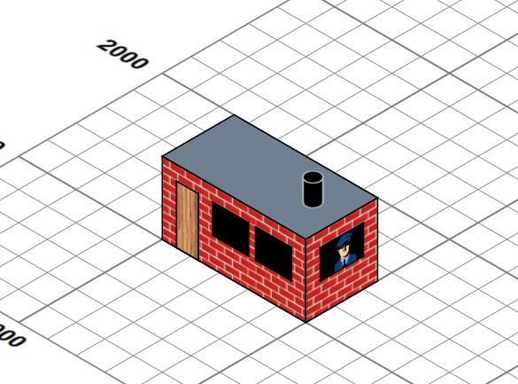
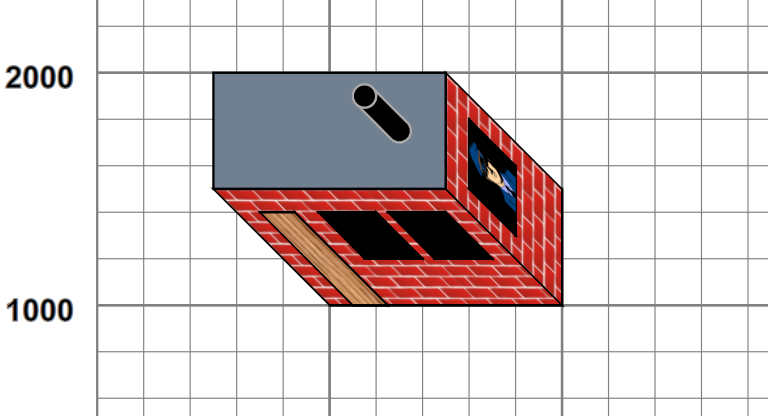
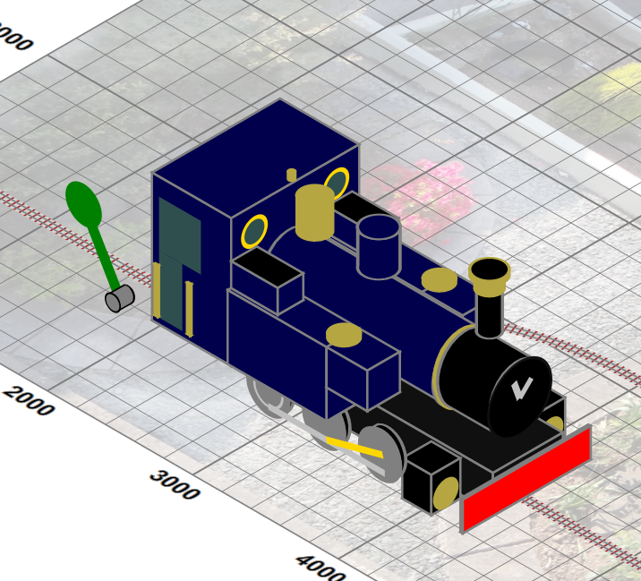

Planar views are useful, but they don't give a picture of what one might see, where the third dimension has some importance. Luckily
an isometric transformation can give a view “from above and aside”. This involves applying a
transform of translate(3000,0) rotate(30) skewX(-30) scale(1,0.8660254037844387) to the graphics and altering some pieces
to support a pseudo-3D view. For example, let us add a simple building:
Figure 11. A simple building
|  |
I could perhaps have looked at using a full 3D modelling package which was capable of generating SVG outputs, but my needs were modest and could perhaps be handled by a simple declarative model, processed completely with XSLT to generate suitable SVG. The building is defined by a simple XML structure of boxes and a cylinder:
<buildings>
<resources> …. </resources>
<group x="1000" y="1000"
fill="url(#brickWall)" stroke-width="10" stroke="black">
<box width="1000" height="500" rotateZ="0" depth="500" z="0">
<top fill="slategrey"/>
</box>
<box height="1" width="150" depth="400"
z="0" x="100" y="0" fill="url(#wood)"/>
<box height="1" width="250" depth="200" fill="black"
z="200" x="350" y="0" />
<box height="1" width="250" depth="200" fill="black"
z="200" x="650" y="0"/>
<box width="1" height="300" depth="200" fill="black"
z="200" x="1000" y="100">
<east >
<svg:image xlink:href="images/officer-in-uniform.png"
x="100" y="0" height="200"/>
</east>
</box>
<cylinder radius="50" length="150" axis="z" fill="black"
z="500" x="800" y="250" stroke="darkgrey"/>
</group>
</buildings>which is then used to generate an SVG group that look like:
Figure 12. An iso-orthogonal building
|  |
such that when the entire SVG group, within which lie all picture pieces (grid, plan, track etc..), is subject to isometric projection, the building appears to have depth and height. (We also produce a true orthogonal view, so we can look at the scene from “directly above”.) Currently the repertoire is orthogonally-oriented rectangular blocks and cylinders, with named “faces” to which styling and content can be attached (top, south and east for blocks, with bottom, north and west normally hidden, and surface, top and bottom for cylinders.). Components are currently positioned absolutely and can be grouped. Using this we can build models of the complexity of:
Figure 13. The Lady Anne
|  |
which is defined by some 50 components, some of which are repeats of common substructures, implemented by bindings and interpolations of XSLT variables. This ability to style and add content to the named faces of the component parts is important . For example, adding the “smokebox handle” to the boiler front of Lady Anne merely requires:
<cylinder class="boilerFront" x="151" z="80" axis="x"
radius="27" length="45">
<end class="boilerEnd">
<svg:g class="silver" stroke="silver" stroke-width="5">
<line x1="0" y1="0" x2="10" y2="-10"/>
<line x1="0" y1="0" x2="-5" y2="-14"/>
</svg:g>
</end>
</cylinder>and the graphic components will be placed and transformed correctly to sit in the boiler front. As we will see later, it is critical that the SVG views of these model engines must be such that they produce the expected picture when subjected to an isometric transformation, as shown for the building, as the trajectory paths trains must follow (which are effectively on the flat) are themselves subjected to the same projection.